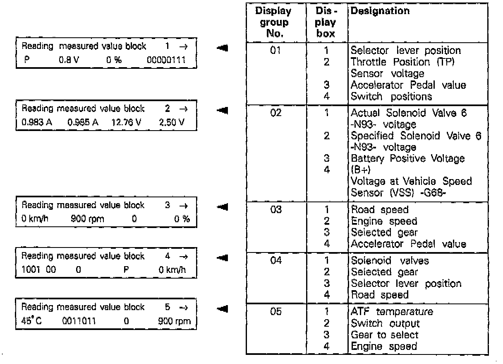

096 Transmission
MEASURED VALUE BLOCK - READING- Connect Scan Tool VAG 1551 and enter address code "02", Transmission electronics, and advance until "Select function XX" readout appears as in display.
^ Indicated on display:
Rapid data transfer HELP
Select function XX
- Press buttons 0 and 8. (To select function 08 "Read measuring value block").
^ Indicated on display:
Rapid data transfer Q
08 Read measuring value block
- Press Q button to confirm input.
^ Indicated on display:
Read measuring value block
Enter display group number XX
- Enter desired display group.
Display group 01 entered as an example.
See List of Selectable Display Groups section below for complete list of all Display groups.
- Press Q button to confirm input.
^ Indicated on display:
Read measuring value block 1 -->
-->1 -->2 -->3 -->4

- There are always 4 display fields in the measured value block (displayed in actual measurements).
- Explanation of values in the individual display fields (normal scan data values) are found in Scan Data Value Tables.

List of Selectable Display Groups
- If the printer is switched ON, the current display is pointed out on the log.
- If the values in all the display fields are as specified:
- Press --> key
^ Indicated on display:
Rapid data transfer HELP
Select function XX